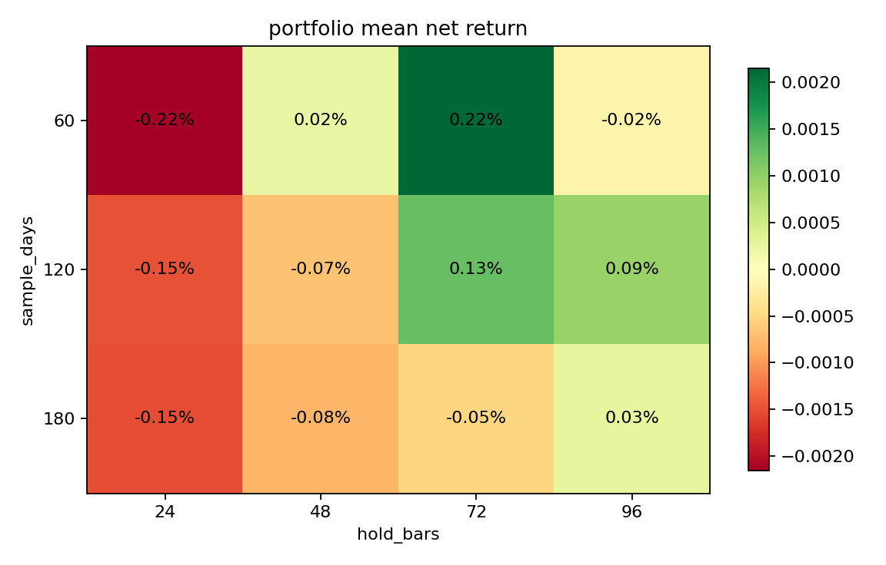
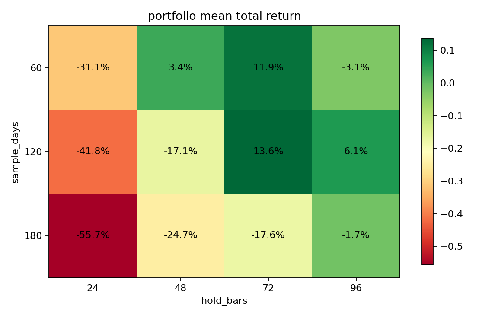
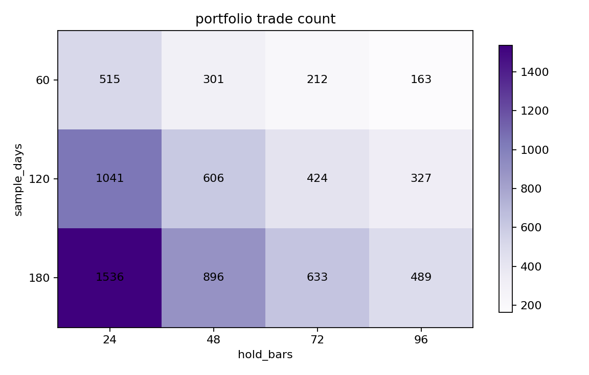

生成时间：2026-03-14 04:15 UTC ｜ Binance 15m（BTC/ETH/SOL）｜ 成本：10bps round-trip ｜ 规则：同一资产同一时间只保留一笔仓位，不允许重叠开仓。
strategy chosenretest_holdportfolio-gated
策略确定：根据前一轮 Fibonacci 变体比较，主策略定为 retest_hold：先恢复到有利方向，再等一次回踩确认后进场。
扩展回测最优格子：120d / 持有 72 bars（约 18.0 小时）。在“每个资产同一时间只持有一笔”的更像真实交易的口径下，这个格子的聚合表现约为：单笔净收益 0.13%、平均总收益 13.62%、交易数 424。
你可以把这条策略理解成：不是价格一碰 Fibonacci 回撤位就买，而是要先看到它 回到有利方向，再等一次 回踩但没破坏结构，下一根再进场。
A：不是“碰到 Fibonacci 就算”。真正的信号是 3 步：
retest_hold 信号成立。A：下一根 K 线开盘进场。如果当前结构是上升回踩，就做多；如果当前结构是下降反抽，就做空。然后按这次最佳组合，持有 72 bars ≈ 18.0 小时 后退出。
A：按这次最优组合（120d / 72 bars）看：
注意：这里的“平均总收益”是把 BTC / ETH / SOL 三个资产各自跑完后再求平均，不是说每一笔都能赚这么多。
A：在这次最优组合里，ETH 最强，BTC 一般，SOL 接近打平：
A：还不建议直接当独立主策略实盘。 原因很简单：它在某些样本段有效，但不是所有更长样本都稳定。更诚实的定位是：它现在更像一个 confirmation / filter layer，适合叠加到 breakout / pullback 主线上，而不是自己单独扛起整个策略。



| sample_days | hold_bars | trade_count | mean_net_return | median_net_return | win_ratio | mean_total_return | median_total_return | positive_asset_ratio | invalidation_ratio_12b | mean_entry_lag_bars |
|---|---|---|---|---|---|---|---|---|---|---|
| 60 | 24 | 515 | -0.22% | -0.23% | 40.36% | -31.11% | -32.95% | 0.00% | 40.60% | 5.92 |
| 60 | 48 | 301 | 0.02% | 0.04% | 50.19% | 3.38% | -18.92% | 33.33% | 36.19% | 5.52 |
| 60 | 72 | 212 | 0.22% | -0.09% | 48.15% | 11.89% | 11.79% | 66.67% | 37.23% | 5.72 |
| 60 | 96 | 163 | -0.02% | -0.61% | 42.33% | -3.07% | -1.91% | 33.33% | 42.35% | 5.55 |
| 120 | 24 | 1041 | -0.15% | -0.17% | 42.55% | -41.83% | -34.14% | 0.00% | 38.73% | 5.85 |
| 120 | 48 | 606 | -0.07% | -0.07% | 48.21% | -17.08% | -16.48% | 33.33% | 35.82% | 5.73 |
| 120 | 72 | 424 | 0.13% | -0.07% | 48.35% | 13.62% | 0.89% | 66.67% | 35.14% | 5.80 |
| 120 | 96 | 327 | 0.09% | -0.09% | 48.62% | 6.06% | 16.39% | 66.67% | 37.61% | 5.82 |
| 180 | 24 | 1536 | -0.15% | -0.18% | 42.84% | -55.71% | -58.36% | 0.00% | 38.75% | 5.86 |
| 180 | 48 | 896 | -0.08% | -0.08% | 47.68% | -24.70% | -23.55% | 33.33% | 37.29% | 5.82 |
| 180 | 72 | 633 | -0.05% | -0.11% | 47.55% | -17.59% | -11.74% | 0.00% | 36.33% | 5.79 |
| 180 | 96 | 489 | 0.03% | -0.08% | 48.06% | -1.67% | 7.31% | 66.67% | 37.21% | 5.78 |
重点看 mean_total_return：它比单笔均值更接近你真正关心的“整段跑下来有没有赚”。
| asset | trade_count | mean_net_return | win_ratio | total_return | invalidation_ratio_12b | mean_entry_lag_bars |
|---|---|---|---|---|---|---|
| BTC-USD | 142 | 0.02% | 45.77% | -0.90% | 35.92% | 5.85 |
| ETH-USD | 140 | 0.29% | 49.29% | 40.87% | 35.00% | 5.92 |
| SOL-USD | 142 | 0.06% | 50.00% | 0.89% | 34.51% | 5.62 |
| variant | trade_count | mean_net_return | win_ratio | invalidation_ratio_12b | mean_entry_lag_bars | positive_asset_ratio |
|---|---|---|---|---|---|---|
| baseline | 1962 | -0.04% | 45.36% | 51.27% | 1.00 | 33.33% |
| confirm_1bar | 842 | -0.07% | 42.76% | 32.19% | 2.00 | 33.33% |
| confirm_2of3 | 849 | -0.03% | 44.05% | 30.98% | 4.00 | 33.33% |
| retest_hold | 649 | -0.02% | 45.61% | 37.13% | 4.81 | 33.33% |